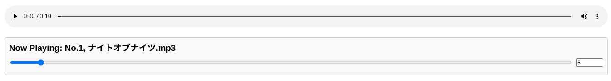

@fynk7777 for use chatGPT
GitHub: http://github.com/fynk7777/Audio-Playlist
これは、自分がゲームをするときに裏で音楽を流したいなと思って作ったものです。
自分用に作っているため、バグが起きることもありますがご了承ください。
以下は全体の画面の画像です
左上の「Upload Audio Files」から音声ファイルをアップロードすると、「Available Songs」に曲が追加されます。
「IndexedDBの容量の確認」ボタンを押すと、ブラウザのIndexedDBの容量を確認できます。

「ヘルプ・詳細」を押すとヘルプ・詳細が表示されます。
出力デバイスを変更できます。(これはHTTPで実行してないと表示されません)

「Global Volume」で全体の音量を調整可能です。（初期設定: 10）

「Available Songs」から曲をドラッグ＆ドロップ、またはダブルクリックで「Playlist」に曲を追加できます。
曲ごとのスライダーで音量を個別に設定できます。（初期設定: 5）
以下が各ボタンの説明です

再生中の曲はプレイリスト内で強調表示されます。

また、再生中の曲の音量や再生位置をスライダーで調整できます。
ArrowUpArrowDownShift + ArrowUpShift + ArrowDownCtrl + ArrowUpCtrl + ArrowDownCtrl + Shift + ArrowUpCtrl + Shift + ArrowDownArrowLeftArrowRightSpaceEnterLHctrl + Uctrl + Iダブルクリックで移動しいると上記のバグは起きない
ダブルクリックで移動しいると上記のバグは起きない